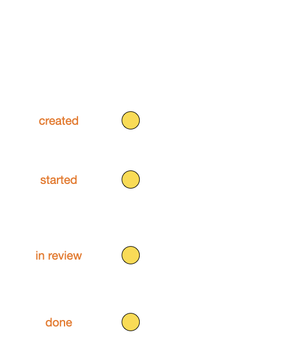
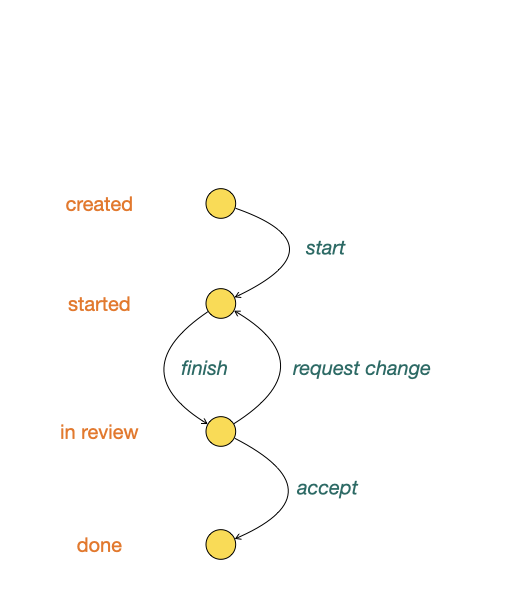
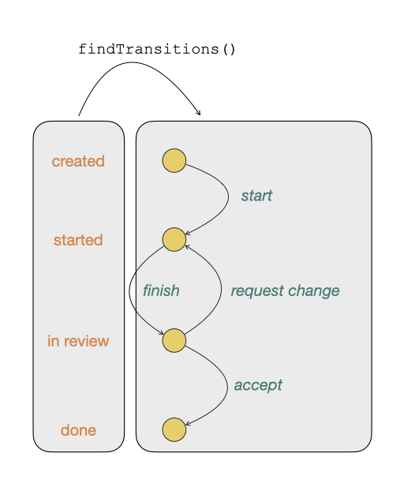
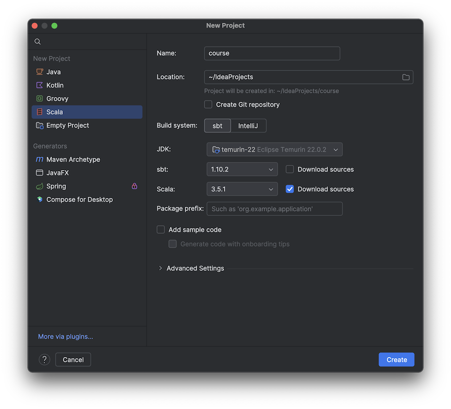
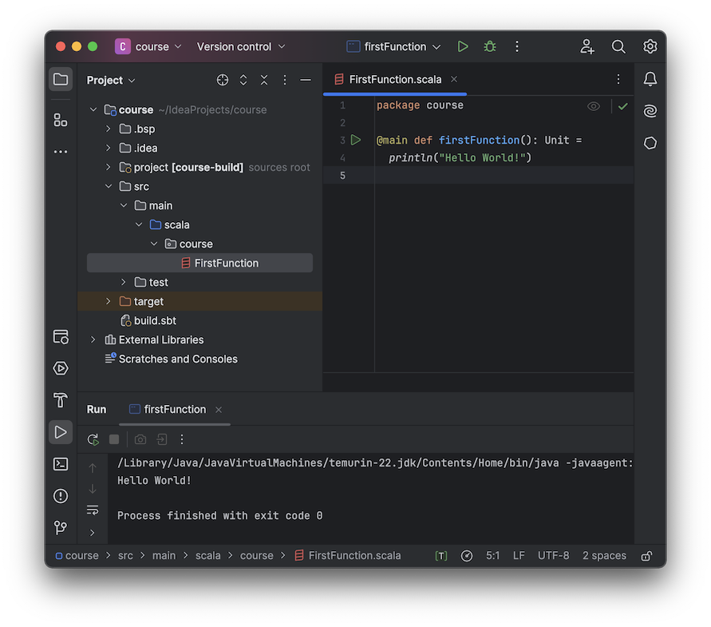
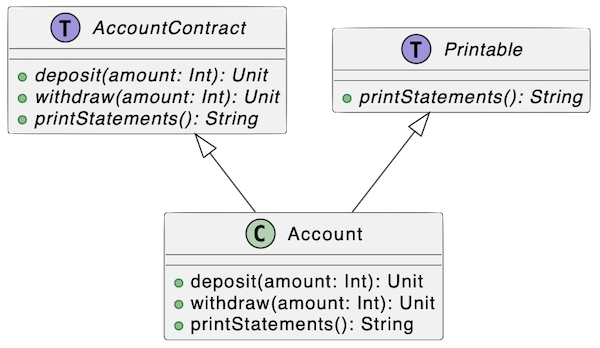
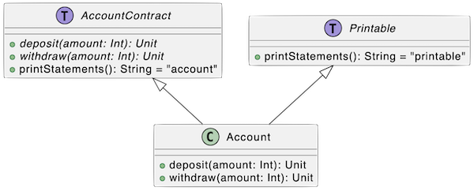

Programmation fonctionnelle avec Scala
Tour de table 👀
Enseignant
Sébastian Le Merdy
19 ans d’expérience professionnelle
dans le développement
ESN 😮
Plus récemment dans un organisme de paiement

Actuellement chez un éditeur SaaS
dans la data

Principalement autour des langages JVM


Et vous ?
Quelle expérience avec des langages fonctionnels ?
- OCaml
- Haskell
- F#
- C
Connaissez-vous les mots-clés ?
- fonctions pures
- récursivité
- effets de bord
- monades
Mais rentrons dans le vif du sujet
FP…
Introduction à la programmation fonctionnelle
Fonction
Définition mathématique
E → F
x ↦ f(x)
Il s’agit d’une transformation
d’une valeur appartement à l’ensemble de départ
vers une valeur appartenant à l’ensemble d’arrivée.
Exemple : des tâches et leur statut
Des transitions entre tâches
Ensembles de départ et d’arrivée
enum TaskStatus:
case Created, Started, InReview, Doneenum TaskTransition:
case Start, Finish, RequestChange, Acceptdef findTransitions: TaskStatus => Seq[TaskTransition] =
case Created => Seq(Start)
case Started => Seq(Finish)
case InReview => Seq(RequestChange, Accept)
case Done => Seq()Règle tirée de la réalité
Toujours chercher à diminuer la taille des ensembles de départ et d’arrivée permet de
- Simplifier le code et la lisibilité
- Éviter les bugs
- Éviter les attaques
- Ne pas implémenter des cas qui ne serviront jamais
Travail pratique
Mettre en place un environnement de développement pour écrire sa première fonction en Scala
- Télécharger IntelliJ IDEA Community Edition
- Installer IntelliJ IDEA Community Edition
- Installer le plugin Scala
- Générer un nouveau projet
Travail pratique
Travail pratique
Caractéristiques d’une fonction
- totale
- déterministe
- sans effet de bord
Pureté
def sayHello(niceMessage: String): Unit =
println(s"Hello $niceMessage")sayHello("world!")Hello world!def dice(): Int =
Random.nextInt(6) + 1dice()
val res0: Int = 5dice()
val res1: Int = 3def nowPlus(days: Long): Instant =
Instant.now().plus(days, ChronoUnit.DAYS)nowPlus(3)
val res0: java.time.Instant = 2024-03-05T18:55:34.125784ZnowPlus(5)
val res1: java.time.Instant = 2024-03-07T18:55:34.215660Zdef saveArticle(id: UUID, content: String, author: Author)(
database: Database
): Boolean =
database.executeQuery(
"""INSERT INTO Article(id, content, author_name, author_email)
|VALUES (:id, :content, :author_name, :author_email);
|""".stripMargin,
"id" -> id,
"content" -> content,
"author_name" -> author.name,
"author_email" -> author.email
)saveArticle(
UUID.fromString("0d975fff-44dc-4110-b21a-1f31148969b8"),
"<p>Great content</p>",
Author("Sébastian", "seb@example.com")
)(postgresql)
val res0: Boolean = trueToutes ces fonctions sont impures car :
- Deux appels successifs ne produisent pas la même valeur en retour ;
- Elles créent des effets de bord.
Pourquoi les fonctions pures sont-elles intéressantes ?
- transparence référentielle
- immuabilité
- des paramètres en entrée
- une valeur produite en retour
Permet donc des optimisations massivement parallélisables
Travail pratique
Écrire une fonction pure qui débarrasse les emails suivant du bruit:
"kai@example.com sacha@example.net" "cruz@example.org" noam@example.com
libraryDependencies +=
"org.scalameta" %% "munit" % "0.7.29" % Testimport munit.FunSuite
class EmailCleaner extends FunSuite:
private def clean(notCleanedEmail: String): String = ???
test("emailCleaner"):
assertEquals(
obtained = clean(""""kai@example.com"""),
expected = "kai@example.com"
)Les tests unitaires
import EmailCleaner.clean
import munit.FunSuite
class EmailCleanerSuite extends FunSuite:
test("remove starting quote"):
assertEquals(clean(""""kai@example.com"""),
"kai@example.com")
test("remove trailing quote"):
assertEquals(clean("""sacha@example.net""""),
"sacha@example.net")
test("remove starting and trailing quote"):
assertEquals(clean(""""cruz@example.org""""),
"cruz@example.org")
test("remove starting and trailing spaces"):
assertEquals(clean(""" noam@example.com """),
"noam@example.com")L’implémentation
object EmailCleaner:
private val startWithQuote = """^"(.+)""".r
private val endsWithQuote = """(.+)"$""".r
private val startAndEndWithQuote = """^"(.+)"$""".r
private val startAndEndWithSpaces = """^\s+(.*?)\s+$""".r
def clean(notCleanedEmail: String): String =
notCleanedEmail match
case startAndEndWithQuote(email) => email
case startWithQuote(email) => email
case endsWithQuote(email) => email
case startAndEndWithSpaces(email) => email
case _ => notCleanedEmailLes fonctions pures sont importantes : ce sont les blocs de base de la programmation fonctionnelle.
Mais comment aller plus loin et finir par écrire de vrais programmes ?
Composition
Définition mathématique
f ∘ g
f(g(x))
D’un point de vue génie logiciel
Il s’agit d’un moyen de garantir
- la ré-utilisabilité du code
- le bon niveau d’abstraction
- la lisibilité
case class User(name: String, age: Int)enum Category:
case Young, Adult, Oldval categoryByMaxAges: Map[Int, Category] =
Map(
24 -> Category.Young,
64 -> Category.Adult,
Integer.MAX_VALUE -> Category.Old
)val discountByCategories: Map[Category, Int] =
Map(
Category.Young -> 25,
Category.Adult -> 0,
Category.Old -> 35
)def computePrice(
user: User,
categories: Map[Int, Category],
price: Long,
discounts: Map[Category, Int]
): Long = price - price * discounts(
categories
.filter { case (maxAge, category) => maxAge >= user.age }
.minBy { case (maxAge, category) => maxAge }
._2
) / 100computePrice( computePrice( computePrice(
User("Emma", 16), User("Nicolas", 41), User("Martine", 67),
categoryByMaxAges, categoryByMaxAges, categoryByMaxAges,
price = 1999, price = 5500, price = 4999,
discountByCategories discountByCategories discountByCategories
) ) )
val res0: Long = 1500 val res1: Long = 5500 val res2: Long = 3250Décomposons
def computePrice(
user: User,
categories: Map[Int, Category],
price: Long,
discounts: Map[Category, Int]
): Long =
computePrice(
price,
computeDiscount(user, categories, discounts)
)
def computePrice(price: Long, discount: Long): Long =
price - price * discount / 100
def computeDiscount(
user: User,
categories: Map[Int, Category],
discounts: Map[Category, Int]
): Long = discounts(findCategory(user, categories))
def findCategory(
user: User,
categories: Map[Int, Category]
): Category =
val (_, category) = categories
.filter { case (maxAge, category) => maxAge >= user.age }
.minBy { case (maxAge, category) => maxAge }
category
Travail pratique
- Écrire deux fonctions pures :
times2qui multiplie unIntpar 2addOnequi ajoute 1 auIntpassé en paramètre
- Composer ces deux fonctions pour obtenir une fonction qui multiplie un
Intpar 2 puis ajoute 1.
Corrigé
object Composition:
def times2(value: Int): Int = value * 2
def addOne(value: Int): Int = value + 1
def times2PlusOne(value: Int): Int = addOne(times2(value))
@main def compositionMain(): Unit =
println(times2PlusOne(5)) // 11Les fonctions : ces citoyens de premier ordre
Une fonction est considérée comme un type de données comme les autres.
- peut-être passée en argument d’une autre fonction
def logBeforeAndAfter(message: String, task: () => Unit): Unit =
println(s"before $message")
task()
println(s" after $message")logBeforeAndAfter("hello", () => { println("Hello World!") })before hello
Hello World!
after hellodef logBeforeAndAfterResult(
message: String,
computeResult: String => Long
): Unit =
println(s"before $message")
println(s"result ${computeResult(message)}")
println(s" after $message")logBeforeAndAfterResult("hello", message => message.length)before hello
result 5
after helloUne fonction est considérée comme un type de données comme les autres.
- peut-être passée en argument d’une autre fonction
- peut-être retournée par une autre fonction
def operationToCompute(operation: String): (Long, Long) => Long =
operation match
case "add" => (left, right) => left + right
case "subtract" => (left, right) => left - right
case "multiply" => (left, right) => left * right
case _ => (left, right) => Long.MinValueoperationToCompute("add" )(3, 2)
val res0: Long = 5operationToCompute("subtract")(3, 2)
val res1: Long = 1operationToCompute("multiply")(3, 2)
val res2: Long = 6operationToCompute("divide" )(3, 2)
val res3: Long = -9223372036854775808Travail pratique
Utiliser compose et/ou andThen pour composer times2 et addOne
Corrigé
object Composition:
def times2(value: Int): Int = value * 2
def addOne(value: Int): Int = value + 1
def times2PlusOne(value: Int): Int = addOne(times2(value))
def withCompose(value: Int): Int = addOne.compose(times2)(value)
def withAndThen(value: Int): Int = times2.andThen(addOne)(value)
@main def compositionMain(): Unit =
println(times2PlusOne(5)) // 11
println(withCompose(5)) // 11
println(withAndThen(5)) // 11Récursivité
La possibilité pour une fonction de se rappeler elle-même. Permet de traiter :
- une structure de données elle-même récursive
- une collection
Implémentation
- trouver une ou plusieurs conditions d’arrêt
- se rappeler soi-même avec des données transformées
Récursion terminale
L’appel récursif est la dernière évaluation dans l’implémentation de la fonction
Permet d’éviter des épuisements de la pile d’exécution (aka StackOverflow®)
Exemple : lire un flux
val input = """34
|84
|12
|
|32
|28
|9
|7""".stripMargin@tailrec
def sums(
input: List[String],
acc: Seq[Long] = Vector.empty,
sum: Long = 0
): Seq[Long] =
input match
case Nil => acc :+ sum
case "" :: tail => sums(tail, acc :+ sum)
case n :: tail => sums(tail, acc, sum + n.toLong)sums(input.linesIterator.toList)
val res0: Seq[Long] = Vector(130, 76)Travail pratique
Calculer la somme
du premier et du dernier chiffre
de chacune des lignes
en n’utilisant que des fonctions récursives
two1nine eightwothree abcone2threexyz xtwone3four 4nineeightseven2 zoneight234 7pqrstsixteen
Travail pratique
Calculer la somme
du premier et du dernier chiffre
de chacune des lignes
en n’utilisant que des fonctions récursives
two1nine -> 219 -> 29
eightwothree -> 8wo3 -> 83
abcone2threexyz -> abc123xyz -> 13
xtwone3four -> x2ne34 -> 24
4nineeightseven2 -> 49872 -> 42
zoneight234 -> z1ight234 -> 14
7pqrstsixteen -> 7pqrst6teen -> 76
281
Corrigé de la première fonction: test unitaire
import SumAll.toNumber
import munit.FunSuite
class SumAllSuite extends FunSuite:
test("toNumber"):
assertEquals(toNumber("two1nine"), "219")
assertEquals(toNumber("eightwothree"), "8wo3")
assertEquals(toNumber("abcone2threexyz"), "abc123xyz")
assertEquals(toNumber("xtwone3four"), "x2ne34")
assertEquals(toNumber("4nineeightseven2"), "49872")
assertEquals(toNumber("zoneight234"), "z1ight234")
assertEquals(toNumber("7pqrstsixteen"), "7pqrst6teen")Corrigé de la première fonction: implémentation
object SumAll:
def toNumber(value: String): String = value match
case "" => "" // terminating scenario
case s if s.startsWith("one") => "1" + toNumber(s.drop(3))
case s if s.startsWith("two") => "2" + toNumber(s.drop(3))
case s if s.startsWith("three") => "3" + toNumber(s.drop(5))
case s if s.startsWith("four") => "4" + toNumber(s.drop(4))
case s if s.startsWith("five") => "5" + toNumber(s.drop(4))
case s if s.startsWith("six") => "6" + toNumber(s.drop(3))
case s if s.startsWith("seven") => "7" + toNumber(s.drop(5))
case s if s.startsWith("eight") => "8" + toNumber(s.drop(5))
case s if s.startsWith("nine") => "9" + toNumber(s.drop(4))
case s => s.take(1) + toNumber(s.drop(1))Corrigé de la seconde fonction: test unitaire
import SumAll.{firstAndLast, toNumber}
import munit.FunSuite
class SumAllSuite extends FunSuite:
test("firstAndLastNumber"):
assertEquals(firstAndLastNumber("219"), "29")
assertEquals(firstAndLastNumber("8wo3"), "83")
assertEquals(firstAndLastNumber("abc123xyz"), "13")
assertEquals(firstAndLastNumber("x2ne34"), "24")
assertEquals(firstAndLastNumber("49872"), "42")
assertEquals(firstAndLastNumber("z1ight234"), "14")
assertEquals(firstAndLastNumber("7pqrst6teen"), "76")
test("toNumber"):
() // …Corrigé de la seconde fonction: implémentation
import scala.util.Try
object SumAll:
def first(value: String): String = value match
case "" => ""
case s if Try(s.take(1).toInt).isSuccess => s.take(1)
case s => first(s.drop(1))
def last(value: String): String = first(value.reverse)
def firstAndLastNumber(value: String): String =
first(value) + last(value)
def toNumber(value: String): String = ??? // …Corrigé de la fonction principale: test unitaire
import SumAll.{firstAndLastNumber, sumAll, toNumber}
import munit.FunSuite
class SumAllSuite extends FunSuite:
test("sumAll"):
assertEquals(sumAll("""two1nine
|eightwothree
|abcone2threexyz
|xtwone3four
|4nineeightseven2
|zoneight234
|7pqrstsixteen""".stripMargin), 281)
test("firstAndLastNumber"):
() // …
test("toNumber"):
() // …Corrigé de la seconde fonction: implémentation
import scala.jdk.StreamConverters.*
import scala.util.Try
object SumAll:
def firstAndLastNumber(value: String): String = ??? // …
def toNumber(value: String): String = ??? // …
def sumAll(values: String): Int =
values.lines().toScala(Vector)
.map(toNumber)
.map(firstAndLastNumber)
.map(_.toInt)
.sumIntroduction à Scala
Présentation fonctionnelle de Scala
Modéliser la donnée
ADT - Algebraic Data Types
-
Sum types : énumérations
enum TaskStatus: case Created, Started, InReview, Done -
Product types : case classes
case class Task( name: String, status: TaskStatus )
Décrire et appliquer des traitements
Écrire des fonctions
def findTransitions: TaskStatus => Seq[TaskTransition] =
case Created => Seq(Start)
case Started => Seq(Finish)
case InReview => Seq(RequestChange, Accept)
case Done => Seq()def findTransitions(status: TaskStatus): Seq[TaskTransition] =
status match
case Created => Seq(Start)
case Started => Seq(Finish)
case InReview => Seq(RequestChange, Accept)
case Done => Seq()Notes sur les fonctions
Avec les ADT, on force les fonctions à être pures, car ces structures de données sont immuables.
Comment organiser le code ?
- des méthodes dans les objets compagnions
- style modulaire avec des interfaces et des implémentations
- des méthodes dans les types de données immuables
- des méthodes d’extension pour ajouter les fonctionnalités aux types de données
Exercice Pratique
Matrice de lumières : calcul de la consommation énergétique
turn on 0,0 through 999,999- allume (ou laisse allumées) toutes les lumières
toggle 0,0 through 999,0- bascule la première ligne de 1000 lumières, éteignant celles qui étaient allumées et allumant celles qui étaient éteintes.
turn off 499,499 through 500,500- éteint (ou laisse éteintes) les quatres lumières du milieu.
Exercice Pratique : instructions
turn on 887,9 through 959,629
turn on 454,398 through 844,448
turn off 539,243 through 559,965
turn off 370,819 through 676,868
turn off 145,40 through 370,997
turn off 301,3 through 808,453
turn on 351,678 through 951,908
toggle 720,196 through 897,994
toggle 831,394 through 904,860Combien de lumières sont-elles allumées ?
Corrigé : test unitaire
import ChristmasLights.countLitLights
class ChristmasLightsSuite extends munit.FunSuite:
test("count lit lights after instructions"):
val program = """turn on 887,9 through 959,629
|turn on 454,398 through 844,448
|turn off 539,243 through 559,965
|turn off 370,819 through 676,868
|turn off 145,40 through 370,997
|turn off 301,3 through 808,453
|turn on 351,678 through 951,908
|toggle 720,196 through 897,994
|toggle 831,394 through 904,860""".stripMargin
val count = countLitLights(program)
assertEquals(count, 230_022)Corrigé : ADTs
object ChristmasLights:
case class Coordinates(x: Int, y: Int)
enum Instruction:
case ON(corner1: Coordinates, corner2: Coordinates)
case OFF(corner1: Coordinates, corner2: Coordinates)
case TOGGLE(corner1: Coordinates, corner2: Coordinates)Corrigé : parsing
import scala.util.matching.Regex
object ChristmasLights:
object Instruction:
val onRegex: Regex =
"""turn on (\d+),(\d+) through (\d+),(\d+)""".r
val offRegex: Regex = """turn off (\d+),(\d+) through (\d+),(\d+)""".r
val toggleRegex: Regex = """toggle (\d+),(\d+) through (\d+),(\d+)""".r
def apply(line: String): Instruction = line match
case onRegex(x1, y1, x2, y2) =>
ON(Coordinates(x1.toInt, y1.toInt),
Coordinates(x2.toInt, y2.toInt))
case offRegex(x1, y1, x2, y2) => OFF(Coordinates(x1.toInt, y1.toInt), Coordinates(x2.toInt, y2.toInt))
case toggleRegex(x1, y1, x2, y2) => TOGGLE(Coordinates(x1.toInt, y1.toInt), Coordinates(x2.toInt, y2.toInt))Corrigé : application des instruction et somme
import ChristmasLights.Instruction.{OFF, ON, TOGGLE}
import scala.jdk.StreamConverters.*
object ChristmasLights:
def applyToRectangle[T](c1: Coordinates, c2: Coordinates, effect: (x: Int, y: Int) => T): Seq[T] =
Range(c1.y, c2.y + 1).flatMap(y => Range(c1.x, c2.x + 1)
.map(x => effect(x, y))) def countLitLights(program: String): Int =
val lights = applyToRectangle(Coordinates(0, 0), Coordinates(999, 999), (_, _) => false).toBuffer
program.lines().toScala(Vector).map(Instruction.apply)
.foreach:
case ON(c1, c2) => applyToRectangle(c1, c2,
(x, y) => lights.update(y * 1000 + x, true))
case OFF(c1, c2) => applyToRectangle(c1, c2,
(x, y) => lights.update(y * 1000 + x, false))
case TOGGLE(c1, c2) => applyToRectangle(c1, c2,
(x, y) => lights.update(y * 1000 + x, !lights(y * 1000 + x)))
lights.count(lightIsOn => lightIsOn)Présentation objet de Scala
Différents types d’outils
- Traits
Un trait permet de définir une interface
C’est une liste de méthodes abstraites
trait AccountContract:
def deposit(amount: Int): Unit
def withdraw(amount: Int): Unit
def printStatement(): StringIl peut également définir des membres abstraits
- méthodes abstraites :
def m(): T - définitions de valeurs abstraites :
val x: T - types abstraits :
type T - given abstraits :
given t: T
Ces traits peuvent ensuite être mixés dans
— Mixin Composition —
des implémentations concrètes
class Account(private val clock: Clock) extends AccountContract:
private val transactions = mutable.ListBuffer[Transaction]()
private var balance = 0
override def deposit(amount: Int): Unit =
balance += amount
val now = clock.instant().atZone(UTC).toLocalDate
transactions.append(Transaction(now, amount, balance))
override def withdraw(amount: Int): Unit =
balance -= amount
val now = clock.instant().atZone(UTC).toLocalDate
transactions.append(Transaction(now, -amount, balance))
override def printStatement(): String = transactions
.map(_.toString)
.mkString("Date Amount Balance\n", "\n", "")Que se passe-t-il dans le cas où on mixin plusieurs traits avec des déclarations abstraites identiques ?
✅ Ça compile 😌
Mais dans le cas d’une implémentation par défaut dans les deux traits ?
❎ Ça ne compile pas 😌
error overriding method printStatement in class Account inherits
conflicting members:
method printStatement in trait AccountContract
and method printStatement in trait Printable
(Note: this can be resolved by declaring an override in class
Account.)Différents types d’outils
- Traits
- Classes
Implémentations concrètes, comme en C++ ou en Java.
class Account(private val clock: Clock)
extends AccountContract:
private val transactions = mutable.ListBuffer[Transaction]()
private var balance = 0
override def deposit(amount: Int): Unit =
balance += amount
val now = clock.instant().atZone(UTC).toLocalDate
transactions.append(Transaction(now, amount, balance))
end AccountPour s’en servir, on a besoin de l’instancier.
val savings = Account(Clock.systemDefaultZone())
savings.deposit(20000)Note à propos de la visibilité
Toutes les définitions d’une classe sont public par défaut.
Il faut les rendre private ou protected si on veut les
restreindre.
Constructeurs auxiliaires
On peut définir d’autres constructeurs d’une classe :
class Account(private val clock: Clock):
def this() =
this(Clock.systemUTC())
println("Account constructor with UTC clock")Souvent inutiles, car
- Scala permet de définir des valeurs par défaut aux paramètres du constructeur principal
- L’objet companion d’une classe peut définir des factory methods.
Différents types d’outils
- Traits
- Classes
- Objets companions
Un objet companion est
- un
objectqui doit porter le même nom que la classe - doit-être défini dans le même fichier que la classe
À quoi sert-il ?
- À regrouper des fonctions qui ne sont pas dépendantes d’une instance, mais du type
- À définir des valeurs statiques
- À créer des factory methods (sucre syntaxique)
class Account(private val clock: Clock):
// ...
object Account:
def sum(accounts: Seq[Account]): Int =
accounts.map(_.balance).sum
val dateFormatter = DateTimeFormatter.ofPattern("d.M.y")
def apply(name: String): Account =
println(s"Creating account for $name")
new Account(Clock.systemUTC())Différents types d’outils
- Traits
- Classes
- Objets companions
- Case classes
Les case classes servent à modéliser des structures de données immuables
case class Transaction(
date: LocalDate,
amount: Int,
balance: Int
)
val deposit =
Transaction(LocalDate.parse("2024-05-22"), 20000, 25398)Elles ont des propriétés suplémentaires que les classes n’ont pas
Méthode unapply générée permettant le pattern matching
transaction match:
case Transaction(_, 0 , _) => "zero"
case Transaction(_, amount, _) if amount > 0 => "positive"
case Transaction(_, amount, _) => "negative"Méthode copy permettant de créer des copies modifiées d’une instance
val toEuros: Transaction = transaction.copy(
amount = amount * 656,
balance = balance * 656
)
Méthodes equals et hashCode permettant de garantir l’unicité et la
comparaison d’instances
Méthode toString affichant les données compréhensibles d’une instance
println(deposit)Transaction(2024-05-22,20000,25398)Exercice Pratique
Écrire une classe Account
qui expose les méthodes ci-dessous :
deposit(Int): Unitwithdraw(Int): UnitprintStatement(): String
Voici un exemple de statement :
Date Amount Balance 24.12.2015 +500 500 23.8.2016 -100 400
Corrigé : classe Account
import Account.Transaction
import java.time.ZoneOffset.UTC
import java.time.Clock
import scala.collection.mutable
class Account(private val clock: Clock):
private val transactions = mutable.ListBuffer[Transaction]()
private var balance = 0
def deposit(amount: Int): Unit =
balance += amount
val now = clock.instant().atZone(UTC).toLocalDate
transactions.append(Transaction(now, amount, balance))
def withdraw(amount: Int): Unit =
balance -= amount
val now = clock.instant().atZone(UTC).toLocalDate
transactions.append(Transaction(now, -amount, balance))
def printStatement(): String = transactions
.map(_.toString)
.mkString("Date Amount Balance\n", "\n", "")Corrigé : objet companion de la classe Account
import java.time.format.DateTimeFormatter
import java.time.LocalDate
object Account:
private val dateFormatter =
DateTimeFormatter.ofPattern("d.M.y")
case class Transaction(date: LocalDate,
amount: Int,
balance: Int):
override def toString: String =
val formattedDate = date.format(dateFormatter)
"%-10s %+5d %7d".format(formattedDate, amount, balance)Contrôle continu
Écrire une version de Account
en programmation fonctionnelle pure
L’interface est libre : à vous de choisir ce qui correspond le mieux au design fonctionnel
Date Amount Balance 24.12.2015 +500 500 23.8.2016 -100 400
Corrigé : test unitaire
import munit.FunSuite
import java.time.LocalDate
class AccountSuite extends FunSuite:
test("should use account"):
val account = Account.withdraw(
Account.deposit(
Account.empty,
LocalDate.parse("2015-12-24"),
500),
LocalDate.parse("2016-08-23"),
100)
assertEquals(Account.printStatement(account),
"""Date Amount Balance
|24.12.2015 +500 500
|23.8.2016 -100 400""".stripMargin)Corrigé : fonctions sur Account
import java.time.LocalDate
case class Account(private val transactions: Seq[Transaction])
case class Transaction(date: LocalDate, amount: Int)
object Account:
def empty: Account = Account(Seq.empty)
def deposit(account: Account, date: LocalDate,
amount: Int): Account =
Account(account.transactions :+ Transaction(date, amount))
def withdraw(account: Account, date: LocalDate,
amount: Int): Account =
Account(account.transactions :+ Transaction(date, -amount))
def printStatement(account: Account): String = ???Corrigé : affichage du statement
object Account:
def printStatement(account: Account): String =
"Date Amount Balance" +
printStatement(account.transactions, 0)
private def printStatement(transactions: Seq[TransactionFP],
balance: Int): String =
transactions match
case Nil => ""
case TransactionFP(date, amount) :: tail =>
"\n" + printTransaction(date, amount, balance + amount)
+ printStatement(tail, balance + amount)
private val dateFormatter = DateTimeFormatter.ofPattern("d.M.y")
private def printTransaction(date: LocalDate, amount: Int,
balance: Int): String =
"%-10s %+5d %7d".format(date.format(dateFormatter), amount,
balance)Types et polymorphisme
Qu’est-ce qu’un type ?
Identifie sans ambiguité des définitions de structures de données.
Fondation de Scala en tant que langage typé statiquement : le compilateur connait et vérifie à la compilation les interactions entre les structures de données, les arguments, les types de retour.
Inférence
Bien que statiquement typé, Scala permet une relative souplesse dans la déclaration des symboles. Le compilateur devine les types des variables si le contexte est suffisant.
val x: Int = 1
val y: Double = 1
val a = 1 // Int
val b = 1.0 // Double
val l = List(1, 2, 3) // List[Int]
val m = Map(1 -> "one", 2 -> "two") // Map[Int, String]Génériques
Des classes ou des traits qui prennent des types en paramètre. DRYtm
class Stack[A]:
private var elements: List[A] = Nil
def push(x: A): Unit = elements = elements.prepended(x)
def peek: A = elements.head
def pop(): A =
val head = peek
elements = elements.tail
headval stack = Stack[Int]
stack.push(1)
stack.push(2)
println(stack.pop()) // 2
println(stack.pop()) // 1Types intersection
Le type A & B représente les valeurs qui sont
- à la fois de type
A - et de type
B
trait Resettable:
def reset(): Unit
trait Growable[A]:
def add(a: A): Unit
def f(x: Resettable & Growable[String]): Unit =
x.reset()
x.add("first")Types unions
Le type A | B représente les valeurs qui sont
- soit de type
A - ou de type
B
case class Username(name: String)
case class Password(hash: Hash)
def help(id: Username | Password) =
val user = id match
case Username(name) => lookupName(name)
case Password(hash) => lookupPassword(hash)
// ...Ici pas besoin de créer un trait scelé ou une enumeration en avance.
Typeclasses
C’est un type abstrait et paramétré qui permet d’ajouter des comportements sur des types de données sans avoir besoin de les sous-typer.
trait Showable[A]:
extension (a: A) def show: Stringcase class Person(firstName: String, lastName: String)given Showable[Person] with
extension (p: Person) def show: String =
s"${p.firstName} ${p.lastName}"
val person = Person("John", "Doe")
println(person.show)Exemples dans cats
FonctorApplicativeSemigroupMonoid
Exercice pratique
Implémenter un monoid
Un monoid est un type qui a une opération binaire associative et un élément neutre.
trait Monoid[A]:
def combine(x: A, y: A): A
def empty: Aimport Result.{Error, Success}
enum Result:
case Success(count: Int)
case Error(message: String)
case class Report(ok: List[Success], ko: List[Error]Exercice pratique : test unitaire
import cats.kernel.Monoid
import monoid.Report.{fromResult, given}
import monoid.Result.{Error, Success}
import munit.FunSuiteclass ResultSuite extends FunSuite:
test("should aggregate successes and errors"):
val success1: Success = Success(10)
val error: Error = Error("Null reference encountered")
val success2: Success = Success(42)
val results: Seq[Result] = Vector(success1, error, success2)
val reports: Seq[Report] = results.map(fromResult)
val combinedReport = Monoid.combineAll(reports)
assertEquals(
obtained = combinedReport,
actual = Report(List(success1, success2), List(error)))Exercice pratique : solution
object Report:
def fromResult(result: Result): Report = result match
case success: Success =>
Report(ok = List(success), ko = List.empty)
case error: Error =>
Report(ok = List.empty, ko = List(error))
given Monoid[Report] with
def combine(a: Report, b: Report): Report =
Report(ok = a.ok ++ b.ok, ko = a.ko ++ b.ko)
def empty: Report =
Report(ok = List.empty, ko = List.empty)